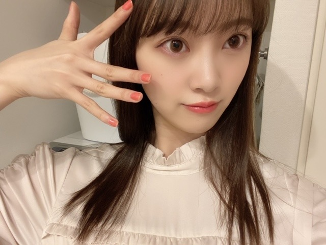

2020/0313Friアップルパイ
暖かくなり
花粉も多くなってきましたが
花粉症の皆さん大丈夫でしょうか？
私は結構きてます...うう...


アレルギーをたくさん持っているので
体質改善の為に漢方を飲み始めました!
苦くて粉薬飲めなかったけど、頑張ってます!
忘れないようにしないとっ
この間
レコメン！の皆さんに遅めのバレンタインで
ポテサラと煮込みハンバーグと玄米おにぎり
を作ったのですが
みなさんモリモリ食べてくださって嬉しかったです♡
春になるとお弁当作りたくなります...!
そして
3月いっぱいで
レコメン！を卒業することになりました☺︎
急なお知らせですみません
乃木ののから始まって
レコメン！では3年間も
のりさんとWパーソナリティをやらせていただき
ラジオに苦手意識があった私がラジオ大好きになったのは今までのラジオのおかけです!
毎週たくさん笑ったなぁ~
いっぱい素を出して楽しめました!
スタッフさんリスナーにみなさんには感謝の気持ちでいっぱいです☺︎
ちょっぴり寂しいけど残りも楽しみます
そして来週の水曜日はだいすきな絢音とみり愛も来てくれて、プリン会初集結になります(^-^)
楽しみ ぜひ聴いてください!
4月からは4期生の田村ちゃんに代わります✨
新しい風! まゆちゃんらしく楽しんでね!


20日19:00〜
テレビ朝日系列
アメトーク3時間spに絵心ない芸人で出演します!
芸人です!
うそです!
昨年に引き続きでした!
みなさん優しくて面白くて毎回楽しませていただいています~
ぜひぜひ
2020/03/13 14:36
コメント(322)
未央奈〜かわいい !!私も花粉症(泣)
!!私も花粉症(泣)
ブログ更新ありがと！！
今回も自撮りめっちゃ可愛い(*≧з≦)
いつも色んなポーズしてくれて嬉しい( 〃▽〃)
ネイルも赤っぽくて可愛い お洋服はTHE、お嬢様って感じで素敵✨
花粉症辛いと思うけど頑張ってね。
薬飲んでね！
そして、レコメン卒業は本当に悲しくて、毎週のりさんとのツーショットとか絡みとか楽しみにしていたから、本当に辛いけど、未央奈ちゃんが明るい感じだから私も前を向くね！本当にお疲れさまでした！来週のプリン会楽しみにしてます！
最後まで楽しんでください！
今日も銀河１大好きです
今回も自撮りめっちゃ可愛い(*≧з≦)
いつも色んなポーズしてくれて嬉しい( 〃▽〃)
ネイルも赤っぽくて可愛い お洋服はTHE、お嬢様って感じで素敵✨
花粉症辛いと思うけど頑張ってね。
薬飲んでね！
そして、レコメン卒業は本当に悲しくて、毎週のりさんとのツーショットとか絡みとか楽しみにしていたから、本当に辛いけど、未央奈ちゃんが明るい感じだから私も前を向くね！本当にお疲れさまでした！来週のプリン会楽しみにしてます！
最後まで楽しんでください！
今日も銀河１大好きです
絶対アメトーークは見逃さず観ます！
みおな好き！
初コメント失礼します！
アメトーク絶対見ます。
レコメン残りの放送も必ず聞きます。
アメトーク絶対見ます。
レコメン残りの放送も必ず聞きます。
ブログ更新ありがとー！
花粉症辛いですよね、、、頑張って乗り切りましょ！
毎週楽しみにしていたので、レコメン卒業しちゃうの寂しいです。またどこかでラジオ出演待ってます！！
アメトーク楽しみにしてますね〜
花粉症辛いですよね、、、頑張って乗り切りましょ！
毎週楽しみにしていたので、レコメン卒業しちゃうの寂しいです。またどこかでラジオ出演待ってます！！
アメトーク楽しみにしてますね〜
更新ありがとう‼︎
レコメン、びっくりしました。
毎週水曜日の習慣になっていたので、寂しいですが最後まで未央奈さんらしく頑張ってください‼︎
プリン会楽しみです(^_^)
絵心ない芸人も見ますよー
今回もたくさん笑わせていただきます笑
いつも元気をありがとうございます
レコメン、びっくりしました。
毎週水曜日の習慣になっていたので、寂しいですが最後まで未央奈さんらしく頑張ってください‼︎
プリン会楽しみです(^_^)
絵心ない芸人も見ますよー
今回もたくさん笑わせていただきます笑
いつも元気をありがとうございます
未央奈ちゃんレコメン卒業おめでとう！
田村ちゃんに変わってどんなラジオになるか楽しみやね！
田村ちゃんに変わってどんなラジオになるか楽しみやね！
白い雲のように
ブログ更新ありがとう！！
トップス春らしくて可愛い〜
春服・夏服・秋服・冬服...
どの季節もかわいいから、選べないなぁ
未央奈はどの季節の服が好きかな？？
そーいえば、珠ちゃんが『未央奈さんはケータリングのサラダをたくさん食べてた 』って言ってたから、
美容のために食事のこととか、お肌のために気をつけてることとかあったら教えてほしいな！
今の季節みんな花粉でお肌が荒れちゃうからね...
では今日はこのへんで ななみ
トップス春らしくて可愛い〜
春服・夏服・秋服・冬服...
どの季節もかわいいから、選べないなぁ
未央奈はどの季節の服が好きかな？？
そーいえば、珠ちゃんが『未央奈さんはケータリングのサラダをたくさん食べてた 』って言ってたから、
美容のために食事のこととか、お肌のために気をつけてることとかあったら教えてほしいな！
今の季節みんな花粉でお肌が荒れちゃうからね...
では今日はこのへんで ななみ
ブログ更新ありがとう！
レコメン卒業寂しい
あと2回絶対聴くよ！
私も花粉症ひどいから仲間だ！
頑張って乗り切ろう！
アメトーク楽しみにしとくね✨
レコメン卒業寂しい
あと2回絶対聴くよ！
私も花粉症ひどいから仲間だ！
頑張って乗り切ろう！
アメトーク楽しみにしとくね✨
未央奈ブログ更新ありがとう
recommonお疲れ様
本当に寂しいです
もう慣れました
毎週未央奈の声を聞きます
どんな仕事があっても
応援します
recommonお疲れ様
本当に寂しいです
もう慣れました
毎週未央奈の声を聞きます
どんな仕事があっても
応援します
ブログ更新ありがとう
レコメンあと2回あるけど約3年間お疲れ様でした！
毎週水曜日がいつからか待ちきれない一日になっていました、のりさんとふざけながらも楽しそうにお話するのがとても嬉しく楽しかったです。毎週の楽しみがひとつ無くなってしまうのは悲しいけどまゆちゃんにも頑張ってもらおうね！
これからも1リスナー1ファンとして堀ちゃんを応援してるよ
レコメンあと2回あるけど約3年間お疲れ様でした！
毎週水曜日がいつからか待ちきれない一日になっていました、のりさんとふざけながらも楽しそうにお話するのがとても嬉しく楽しかったです。毎週の楽しみがひとつ無くなってしまうのは悲しいけどまゆちゃんにも頑張ってもらおうね！
これからも1リスナー1ファンとして堀ちゃんを応援してるよ
未央奈ちゃん♪ブログの更新ありがとう♪花粉症辛いよね・゜・(つД｀)・゜・毎日辛いよ。一緒に頑張ろうね！レコメン！の卒業は本当に辛くて寂しいです(。>д<)いつも沢山の笑顔と元気とか貰ってたよ。来週も必ず聴くね！あと、未央奈ちゃんの料理凄く美味しそうだったよ！喜んでもらえて良かったね♪アメトークも必ずみるね♪凄く楽しみだよ！また、ブログの更新楽しみにしてるね♪未央奈ちゃん大好きだよ！堀 未央奈神推し秀喜より！(≧▽≦)
こんにちは
花粉症つらいですよね
体に気をつけてね
花粉症つらいですよね
体に気をつけてね
ほっちゃんの煮込みハンバーグ
とポテサラセットで
モリモリ食いたい(3回目)
**のりほり亭で
長い間ラジオお疲れ様でした
これからもラジオ贔屓で
お願いします
とポテサラセットで
モリモリ食いたい(3回目)
**のりほり亭で
長い間ラジオお疲れ様でした
これからもラジオ贔屓で
お願いします
未央奈ちゃん、ブログ更新ありがとう！
レコメン卒業おめでとう…ちょっぴり寂しいけど毎回のラジオ
楽しかったよ！
たくさんの写真ありがとう!!
どれも可愛いよ！
またね！
レコメン卒業おめでとう…ちょっぴり寂しいけど毎回のラジオ
楽しかったよ！
たくさんの写真ありがとう!!
どれも可愛いよ！
またね！
元気ななの
レコメンお疲れ様！
これからもずっと応援してるよ！
これからもずっと応援してるよ！
いつもお疲れ様！
未央奈ちゃん相変わらず可愛い♪
ご飯をしっかり食べて
休める時は休んで体調崩さないように気を付けてね！
未央奈ちゃん相変わらず可愛い♪
ご飯をしっかり食べて
休める時は休んで体調崩さないように気を付けてね！
こんにちは。
花粉症ツライですね。
レコメン3年間お疲れ様です。
花粉症ツライですね。
レコメン3年間お疲れ様です。
レコメンで未央奈ちゃんの声が聴けなくなるのは寂しいよ
未央奈こんにちは
レコメン卒業お疲れ様でした
レコメン卒業お疲れ様でした
レコメン卒業はずっと聞いてたから悲しい
けど、みおなちゃんの旅立ちは胸を張って見送ります！！
けど、みおなちゃんの旅立ちは胸を張って見送ります！！
未央奈ちゃんのラジオトークが聞けないのはとても寂しい…
まだ早いけどレコメンお疲れ様でした！
まだ早いけどレコメンお疲れ様でした！
みおな
漢方。
まいちゅんが実践してるやつだよね。
効くみたいね。
自分は花粉症を未だ認めてない（笑）
漢方。
まいちゅんが実践してるやつだよね。
効くみたいね。
自分は花粉症を未だ認めてない（笑）
未央奈！
俺も花粉きてます…
常に何か痒いって感じですね…
対策としては、やはりマスクかな〜って思ってます。
今、入手が困難ですが、花粉症にはマスクがやっぱり必須ですね。
漢方は飲んだことないな〜。
試しにできるなら、やってみたいです。
レコメン、びっくりしたよ。
最近、忙しくて聴けてない日もあるんですが、この前は聴いてて。
3年間お疲れ様でした。
いっつも楽しそうに話してる様子が伺えて、聴いてる身としても存分に楽しませて貰ったよ。
あと2回、楽しんでね！
絵心ない芸人もちゃんと観るからね〜！
俺も花粉きてます…
常に何か痒いって感じですね…
対策としては、やはりマスクかな〜って思ってます。
今、入手が困難ですが、花粉症にはマスクがやっぱり必須ですね。
漢方は飲んだことないな〜。
試しにできるなら、やってみたいです。
レコメン、びっくりしたよ。
最近、忙しくて聴けてない日もあるんですが、この前は聴いてて。
3年間お疲れ様でした。
いっつも楽しそうに話してる様子が伺えて、聴いてる身としても存分に楽しませて貰ったよ。
あと2回、楽しんでね！
絵心ない芸人もちゃんと観るからね〜！
みおちゃん、ブログありがと。
花粉…きてますねぇ…
今年は例年より少ないそう？ですが、花粉はやはり花粉ですよね 笑
レコメン、卒業。
3年間欠かさず聴き続けてきたので、寂しい気持ちでいっぱいですが。
毎週水曜日、私にとって至福の時間でした♡
のりさんのと掛け合いも大好きだったよ。
残り2回も絶対聴くね！
アメトークも楽しみにしてまーす。
花粉…きてますねぇ…
今年は例年より少ないそう？ですが、花粉はやはり花粉ですよね 笑
レコメン、卒業。
3年間欠かさず聴き続けてきたので、寂しい気持ちでいっぱいですが。
毎週水曜日、私にとって至福の時間でした♡
のりさんのと掛け合いも大好きだったよ。
残り2回も絶対聴くね！
アメトークも楽しみにしてまーす。
未央奈ちゃん、少し早いけどレコメンお疲れ様でした。私は聴いた事はなかったけど、声とか話し方とか好きだから、ラジオで頑張っている事が嬉しかったです。あ〜終わって欲しくないな〜、、悲しいです。。
そして、アメトークの絵心ない芸人、楽しみにしてます！去年とってもおもしろかったから、また未央奈ちゃん出て欲しいなぁと思ってたので、、
花粉症頑張ってください！アレルギーは辛いだろうからね。。
そして、アメトークの絵心ない芸人、楽しみにしてます！去年とってもおもしろかったから、また未央奈ちゃん出て欲しいなぁと思ってたので、、
花粉症頑張ってください！アレルギーは辛いだろうからね。。
花粉症、まいちゅんが漢方で体質改善に
成功して、今年はあんまりひどくないっ
て言ってたけど、その漢方？
レコメンのお弁当、お重って和風のもの
と思ってたけど、トリコロールのお重っ
てあるんですね。
レコメン、お疲れさまでした。
毎週生でみおなちゃんの声が聴けないの
は寂しいけど、その分新しい活躍の場が
増えるのも事実。それを楽しみにして
ます。
まずは、プリン会＋プリン体を楽しみに
しています。
成功して、今年はあんまりひどくないっ
て言ってたけど、その漢方？
レコメンのお弁当、お重って和風のもの
と思ってたけど、トリコロールのお重っ
てあるんですね。
レコメン、お疲れさまでした。
毎週生でみおなちゃんの声が聴けないの
は寂しいけど、その分新しい活躍の場が
増えるのも事実。それを楽しみにして
ます。
まずは、プリン会＋プリン体を楽しみに
しています。
こんにちはみおなちゃん❤️
レコメン卒業なんだ。
えっ、
芸人⁉️
もう……………
少し心配だけど……
その言葉はいまは書きません❤️
てか、
プリン会楽しみしていますね❤️
わたしの応援はいつも通りです❤️
ガンバりゃあよ❤️
はい❤️
仕事します❤️
（＾_＾）Ｖ
レコメン卒業なんだ。
えっ、
芸人⁉️
もう……………
少し心配だけど……
その言葉はいまは書きません❤️
てか、
プリン会楽しみしていますね❤️
わたしの応援はいつも通りです❤️
ガンバりゃあよ❤️
はい❤️
仕事します❤️
（＾_＾）Ｖ
来週のアメトークSPもうバッチリとスタンバってますよ
TVだとどこまで堀ちゃんのクレージーさ（素）が放送される（できる？）かわからないけど、めちゃめちゃ楽しみにしてるのよん
TVだとどこまで堀ちゃんのクレージーさ（素）が放送される（できる？）かわからないけど、めちゃめちゃ楽しみにしてるのよん
レコメン3年間お疲れ様でした！
レコメンで生まれた数々の名言僕の心に残ってます
また違うステージでの活躍待ってます！
レコメンで生まれた数々の名言僕の心に残ってます
また違うステージでの活躍待ってます！
ブログ更新ありがとう！
花粉症辛いよね…私は頭痛くなっちゃうから困りものです(;_;)
まいちゅんが漢方効いたって言ってたから未央奈ちゃんにも効きますように。
そしてレコメンの卒業、本当に寂しいです…ショックが大きくて、夜中に泣いてしまいました。
私はレコメンを聴き始めてまだ1年ちょっとだけど、のりさんとの掛け合いが大好きだったし、お便り読まれた時は嬉しかったし、未央奈ちゃんのファンの方と仲良くなれたのもレコメンの力が大きくて…レコメンの思い出が沢山あります。
未央奈ちゃんのラジオが大好きです！！
本当に寂しいけれど、ラスト2回ののりほりコンビを噛み締めます。
プリン会集結回も楽しみ︎☺︎ 長い間MCお疲れ様でした！
アメトーークの予告の未央奈ちゃん、三つ編みにピンクのベレー帽姿ですごく可愛かった♡2回目の出演おめでとう！放送を楽しみにしてます！
花粉症辛いよね…私は頭痛くなっちゃうから困りものです(;_;)
まいちゅんが漢方効いたって言ってたから未央奈ちゃんにも効きますように。
そしてレコメンの卒業、本当に寂しいです…ショックが大きくて、夜中に泣いてしまいました。
私はレコメンを聴き始めてまだ1年ちょっとだけど、のりさんとの掛け合いが大好きだったし、お便り読まれた時は嬉しかったし、未央奈ちゃんのファンの方と仲良くなれたのもレコメンの力が大きくて…レコメンの思い出が沢山あります。
未央奈ちゃんのラジオが大好きです！！
本当に寂しいけれど、ラスト2回ののりほりコンビを噛み締めます。
プリン会集結回も楽しみ︎☺︎ 長い間MCお疲れ様でした！
アメトーークの予告の未央奈ちゃん、三つ編みにピンクのベレー帽姿ですごく可愛かった♡2回目の出演おめでとう！放送を楽しみにしてます！
春らしくなってきたね。僕は花粉症ではないと思っていたけど、最近くしゃみがよく出るのでもしかしたら花粉症になったかもしれません。
春は別れの季節で、レコメン卒業寂しいです。毎週当たり前のように聴けていた未央奈ちゃんの声が聴けなくなると思うと、寂しいし、ラジオでしか聴けない話とかもあったからやっぱり寂しいです。あと2回のラジオ、楽しみます！楽しみにしてます！
プリン会でのラジオとても楽しみなので、たくさんメール送りますね！
アメトークの絵心ない芸人2年連続出演おめでとう！予告で映ったベレー帽姿とても可愛かったです！楽しみにしてます！
コロナウイルスも流行ってるから体調には気をつけてね！応援してます！
春は別れの季節で、レコメン卒業寂しいです。毎週当たり前のように聴けていた未央奈ちゃんの声が聴けなくなると思うと、寂しいし、ラジオでしか聴けない話とかもあったからやっぱり寂しいです。あと2回のラジオ、楽しみます！楽しみにしてます！
プリン会でのラジオとても楽しみなので、たくさんメール送りますね！
アメトークの絵心ない芸人2年連続出演おめでとう！予告で映ったベレー帽姿とても可愛かったです！楽しみにしてます！
コロナウイルスも流行ってるから体調には気をつけてね！応援してます！
ブログ更新ありがとう。
花粉症つらいよね〜私は今は大丈夫！
これからも頑張ってね！応援してるよ〜
花粉症つらいよね〜私は今は大丈夫！
これからも頑張ってね！応援してるよ〜
堀ちゃん今日も可愛い！！
花粉凄いですよね！堀ちゃんが作った煮込みハンバーグ食べたい！！アメトーークも楽しみです！
堀ちゃんのレコメン卒業、ショックでした。正直言うと、嫌です。毎週水曜日の楽しみが無くなってしまい、残念です。のりほりコンビ大好きでした。今すぐ撤回してもらいたいぐらいです。
残りの2回は、12時台に読まれるようにたくさんメールを送って、レコメンの堀ちゃんをとても楽しみにしています。
花粉凄いですよね！堀ちゃんが作った煮込みハンバーグ食べたい！！アメトーークも楽しみです！
堀ちゃんのレコメン卒業、ショックでした。正直言うと、嫌です。毎週水曜日の楽しみが無くなってしまい、残念です。のりほりコンビ大好きでした。今すぐ撤回してもらいたいぐらいです。
残りの2回は、12時台に読まれるようにたくさんメールを送って、レコメンの堀ちゃんをとても楽しみにしています。
未央奈さんこんにちは♪
俺も花粉症きてるよ(>_<)
辛い時季……
ハンバーグに玄米おにぎり良いなあ(〃^ー^〃)
レコメン!卒業寂しい
来週しっかりチェックするね!
アメトーークも視るよd(⌒ー⌒)!
今日も１日HAPPYを
俺も花粉症きてるよ(>_<)
辛い時季……
ハンバーグに玄米おにぎり良いなあ(〃^ー^〃)
レコメン!卒業寂しい
来週しっかりチェックするね!
アメトーークも視るよd(⌒ー⌒)!
今日も１日HAPPYを
花粉嫌ですよね！
ブログ更新ありがとう(*´∀`*) 大好き
アメトークの予告見ました！
とても楽しみです。
自分もいろいろ漢方飲んでます。
とても楽しみです。
自分もいろいろ漢方飲んでます。
レコメンとても残念です。
毎週、毎週 水曜日が楽しみでした。
残りの二回絶対聴きます。
毎週、毎週 水曜日が楽しみでした。
残りの二回絶対聴きます。
レコメン！卒業、
寂しくなるな
ラジオの楽しみが一つ減ります
俺もポテサラ、煮込みハンバーグ食べたーーい
アメトーーーーク、、、絵心ない
堀ちゃん。ピーーーーンチ
堀ちゃんの絵が世の中に広まったら、、ピーーンチ
未央奈可愛すぎる！
ネイルの色めっちゃ可愛いし、春っぽい色！
更新頻度が多い事をとても感謝してます！
これからもよろしくお願いします！
ネイルの色めっちゃ可愛いし、春っぽい色！
更新頻度が多い事をとても感謝してます！
これからもよろしくお願いします！
未央
ブログ
更新ありがとう
いつも元気もらってます
２期生ライブ４２万にん
おめでとう
応援してます
ブログ
更新ありがとう
いつも元気もらってます
２期生ライブ４２万にん
おめでとう
応援してます
未央奈ちゃんおつかれさまです。ちゃんとレコメン卒業する再来週聞くね。悲しいけど見守り続けます。
こんにちわ。
花粉症辛いよね。僕も酷くないけどキテます。
アメトーーク今回も楽しみです。
そしてレコメン！パーソナリティー卒業しちゃうんだね。
寂しいけど堀ちゃんが決めたことやから受け入れないとね。堀ちゃんからバトンもらうまゆちゃん４月から頑張ってね！
花粉症辛いよね。僕も酷くないけどキテます。
アメトーーク今回も楽しみです。
そしてレコメン！パーソナリティー卒業しちゃうんだね。
寂しいけど堀ちゃんが決めたことやから受け入れないとね。堀ちゃんからバトンもらうまゆちゃん４月から頑張ってね！
ブログ更新ありがとう！
アメトーーク楽しみにしてます！
僕が初めて聞いた乃木坂メンバーが出てるラジオがレコメンでその時初めて聞いた未央奈の聞き取りやすくて何故か落ち着く声でとても印象に残ってます
あと2回のレコメンですが、残り二回しっかりリアタイしたいです
アメトーーク楽しみにしてます！
僕が初めて聞いた乃木坂メンバーが出てるラジオがレコメンでその時初めて聞いた未央奈の聞き取りやすくて何故か落ち着く声でとても印象に残ってます
あと2回のレコメンですが、残り二回しっかりリアタイしたいです
堀ちゃん、今日もブログ更新ありがとう。
花粉症大変だね
頑張ってとしか言えない、ごめんね。
レコメン聴いたよ〜
堀ちゃんの手料理食べたいな、絶対美味しいんだろうな。
レコメンあと2回、絶対聴くよ。
アメトーク楽しみだよ！
では〜
花粉症大変だね
頑張ってとしか言えない、ごめんね。
レコメン聴いたよ〜
堀ちゃんの手料理食べたいな、絶対美味しいんだろうな。
レコメンあと2回、絶対聴くよ。
アメトーク楽しみだよ！
では〜


花粉すごいよね〜最近、、、、ほんと困っちゃう
アメトーク絶対見るねーーーー楽しみにしてる！！